RAJAGIRI WEBSITE
HOME

Name:Rajagiri School Of Engineering And Technology
Address:X9V5+96P, Rajagiri Valley Rd, Rajagiri Valley, Kakkanad, Kerala 682039
ABOUT
Rajagiri School of Engineering & Technology (Autonomous) (RSET) is an educational institution located in Kochi, Kerala, India, offering engineering education and research. RSET is affiliated to APJ Abdul Kalam Technological University[3] and approved by the All India Council for Technical Education (AICTE).[4] RSET is managed by the Sacred Heart Province of the Carmelites of Mary Immaculate (CMI) congregation. RSET is a part of the Rajagiri Vidyapeetham (transl. "seat of knowledge").
A premier Institute in higher education, RSET - Rajagiri School of Engineering and Technology is grounded in Kochi, Kerala since 2001. Institute offers Degree courses including 10 UG and 6 PG courses. These programs are offerred in Full Time mode. RSET - Rajagiri School of Engineering and Technology is a reputed institute for M.E./M.Tech, B.E. / B.Tech courses. Students can chose from these programs to persue their career in higher studies. Institute enjoys a good reputation for courses like M.E./M.Tech, B.E. / B.Tech in the streams of Engineering, IT & Software Students can opt courses from these. Over the period, RSET - Rajagiri School of Engineering and Technology has gained expertize through its trained and experienced faculty in the fields of Electrical Engineering, Communications Engineering, Computer Science Engineering, Information Technology, VLSI Design, Artificial Intelligence & Machine Learning, Electronics & Communication Engineering, Civil Engineering, Mechanical Engineering. Courses offered by institute are recognized by approving bodies like AICTE. Courses offered by the Institute for total of 936 students. Institute has a well supported campus with facilities like Auditorium, Boys Hostel, Cafeteria, Co-ed Hostel, Girls Hostel, Gym, Hospital / Medical Facilities, Hostel, Labs, Library, Sports Complex, Wi-Fi Campus.
Gallery
 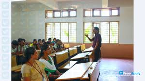
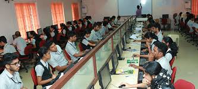
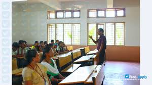
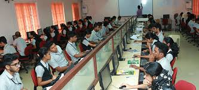

 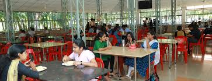
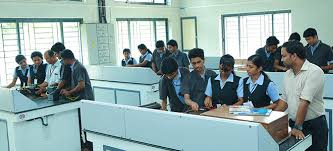
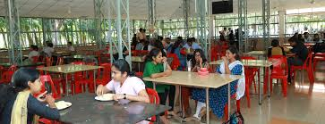
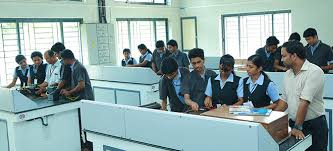
 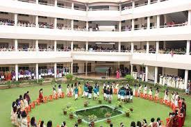
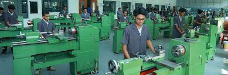
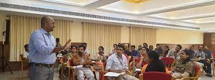
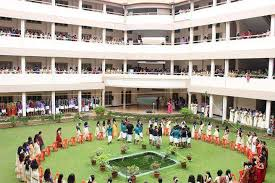
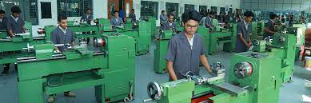
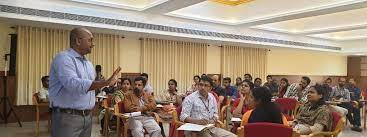
CONTACTS
Phone:0482 3847399
Email:RSET@rajagiri.educ.in
Tel: +91 384 5834784
Fax: +91 384 6849202